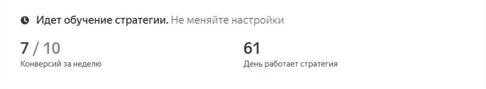
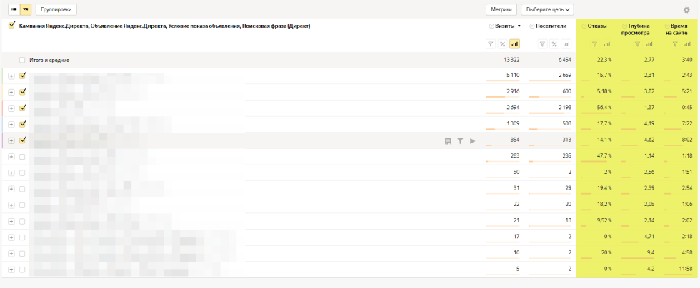

Аналитика и оптимизация рекламных кампаний: подготовка
Нельзя просто взять и настроить один раз контекстную рекламу, а потом забыть про нее и получать результат.
Нужно регулярно следить за статистикой и корректировать стратегию, чтобы реклама была эффективной.
Важно: обращайте внимание на статус обучения автостратегии. Если оно еще не закончилось, не стоит менять настройки. Система должна обучиться – если в этот момент начать что-то редактировать, можно испортить результаты. Потом придется все запускать заново.

Пока идет обучение, не стоит вмешиваться без серьезных причин
Но если прошло больше двух недель, а бюджет улетает без результатов, придется принимать меры.
Причины низкой конверсии часто кроются в настройках кампании – например, в завышенной целевой CPA или низком бюджете.
В любом случае, прежде чем что-то отключать и подкручивать, нужно точно определиться с вашими целями в рекламе и KPI.
Например, если вы хотите оптимизировать кампанию, можно отталкиваться от любого из этих показателей:
- цена лида;
- цена продажи;
- ROI;
- ДРР и другие.
Перед началом оптимизации уточните, правильно ли передаются данные по целям в Яндекс.Метрику и в рекламный кабинет. Проверьте CRM и все настройки. Сравните, все ли заявки и продажи попадают в систему, нет ли расхождений. Если все хорошо, можно приступать к оптимизации.
Важно: обязательно ведите учет того, что и когда меняли в рекламных кампаниях. Это помогает не ходить кругами и не повторятся. Особенно полезно, если вы ведете несколько кампаний.
Если вы ведете кампании не только в Яндекс.Директе, но и в соцсетях, важно правильно настраиваться на целевую аудиторию. Одновременно вести кампании в ЯД и соцсетях сложно, но это может дать взрывной рост подписчиков и лидов – люди будут чаще видеть продукцию вашей фирмы и начнут покупать активнее.
Если вы еще не до конца разобрались в нюансах кампаний в соцсетях – загляните на курс
«Профессия: таргетолог». На нем вы полностью разберетесь, как привлекать клиентов в свой или чужой бизнес, поймете, как настраивать кампанию правильно. Все уроки в формате видео, их можно ставить на паузу или пересматривать, когда нужно разобраться в тонкостях настройки и фильтрации.
Анализ бюджета и конверсий в Яндекс.Директе
Один из наиболее важных отчетов в Директе для анализа бюджета и конверсий – это отчет «Рекламные источники».
Он собирает такую информацию:
- какие источники трафика приводят больше всего посетителей на сайт;
- сколько денег было потрачено на каждый источник;
- какой процент посетителей конвертируется в клиентов;
- какой доход приносит каждый клиент.
В отчете можно увидеть общую статистику по всем рекламным кампаниям и проанализировать каждый источник трафика отдельно:
- количество визитов и уникальных посетителей по каждому источнику трафика;
- среднее время сессии и количество просмотренных страниц;
- показатель отказов;
- количество целей и конверсии по каждому источнику;
- стоимость привлечения каждого посетителя и каждого клиента;
- доход, полученный от каждого источника трафика.
Стоит посмотреть, как работают все поисковые кампании в аккаунте и выполняют ли они ваши KPI. Возможно, при анализе кампаний в Яндекс.Директе окажется, что некоторые съедают большую часть бюджета и не дают результата.

В таком отчете есть что анализировать и корректировать в стратегии